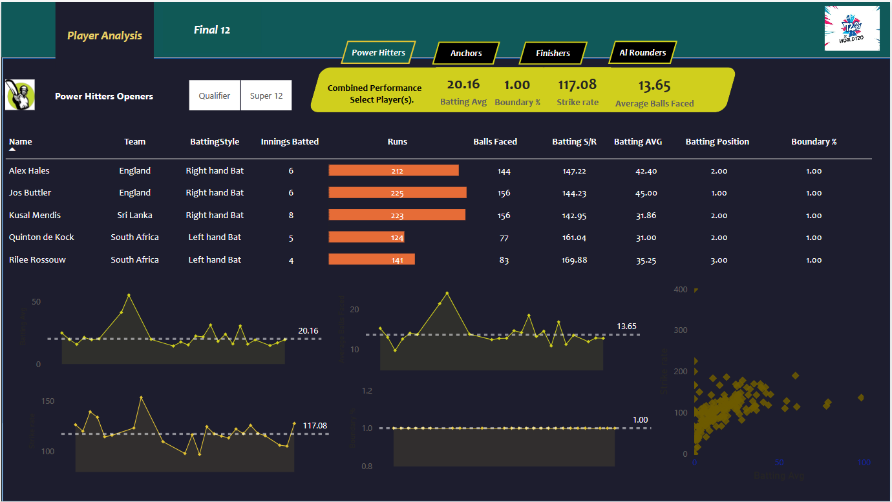
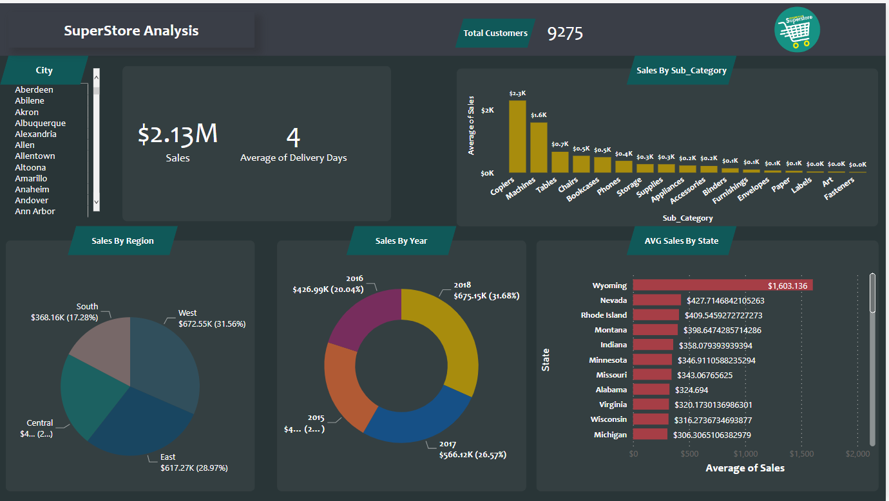
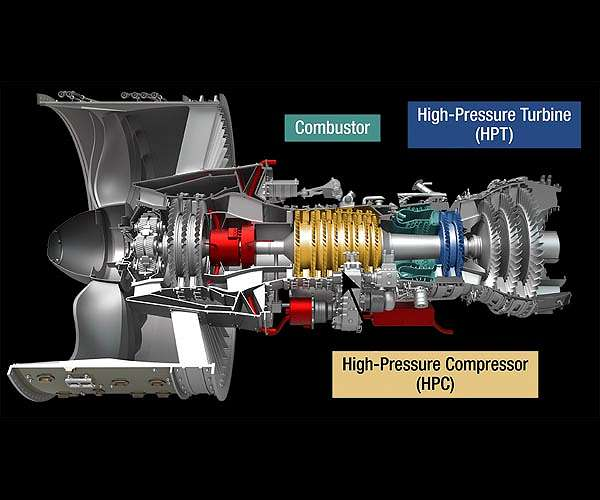

March 12, 2023
Created a dashboard with Power Bi to provide real-time insights into team and player performance.
Transformed and processed data by using DAX and Excel to ensure data completeness and validity.
Provided technical insights to identify trends and patterns of player and inform strategic decision-making.


Developed and maintained a comprehensive sales dashboard for a superstore, providing real-time data and insights on KPI (sales,
monthly revenue) to inform strategic decision-making.
A Deep Learning algorithm for early detection of Parkinson’s disease in Health Care Domain.Applied Deep learning to produce a final model with an accuracy of 88%.
View Project
Developed a customized resume classification system based on industry-specific requirements and company culture.
Resulting in a 25% reduction in time-to-hire and a 15% increase in candidate quality.

Time Series Amazon Forecasting. Predicting the Next 10 Days Stock Prices.
The quality of concrete is determined by its compressive strength, which is measured using a conventional crushing test on a concrete cylinder.
The strength of the concrete is also a vital aspect in achieving the requisite longevity.

In industry, prognostics and health management are key topics for anticipating asset state and avoiding downtime and breakdowns.